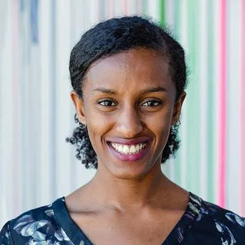
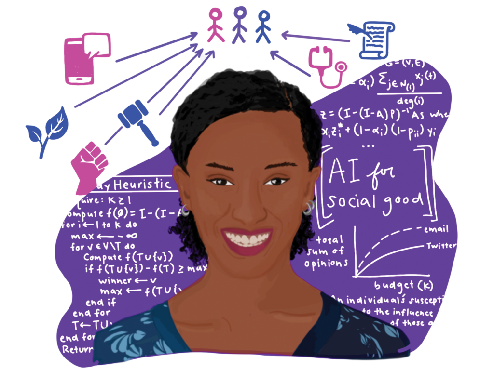

Dr. Rediet Abebe is an African American woman who is a computer scientist. She was born in 1991, in Ethiopia. She is alive and 34 years old. She went to Harvard to get her Bachelor of Arts degree in mathematic, and she got a Master of Science degree later. While at Harvard, she contributed to the Harvard crimson as a staff writer. She completed her doctoral degree in computer science at Cornell University. Rediet was the first black woman to complete a Ph.D in computer science in the university’s history.
One challenge she faced was growing up in Ethiopia where there were fewer opportunities and resources for learning compared to places like the United States. Schools in developing countries sometimes don’t have the same access to technology, research, or funding that schools in richer countries have. Because of that, it can be harder for students to get into things like computer science. Later in her life she moved to the United States to continue her education, which is also a big challenge for a lot of people. Moving to a different country means having to adjust to a new culture, new schools, and sometimes a different way of learning. That can be stressful and difficult, especially when you are also trying to do good in a really hard major like computer science.

Dr. Rediet Abebe overcame systemic challenges through academic focus and a commitment to uplifting underrepresented communities in technology. As a powerhouse for institutional change, she co-founded Black in AI and the Mechanism Design for Social Good (MD4SG) initiative, using data science and algorithmic modeling to dismantle social inequality. By applying a sociotechnical lens to fields like public policy, she transforms social inequities into data-driven optimization challenges, ensuring that algorithms more equitably distribute resources. Ultimately, Dr. Abebe’s work in algorithmic fairness and bias reduction ensures that digital platforms like search engines and social media better reflect the diversity of the real world.
Due to Dr. Abebe’s work with algorithmic fairness and ensuring search inquires cover everyone’s story, we interact with her work each time something is searched on Google or on social media. The sources and apps we see today are bettering their ability to provide unbiased information. Her innovation ensures the digital world mirrors the diversity and background of a real world.

Layout by Bootstrap